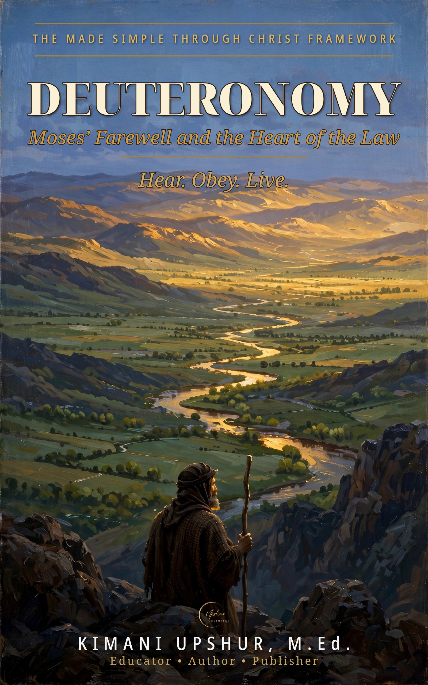

Home / Books / Bible People & Stories

Deuteronomy
by Kimani Upshur, M.Ed.
A 120-year-old leader who will not cross the river. A new generation that did not live the story. One last sermon. Deuteronomy is Moses' farewell: the law spoken a second time, to a second generation, on the plains of Moab — with forty years of wilderness behind them and the Promised Land in front of them. The first generation heard these words at Sinai and broke them within weeks. Their children hear them on the edge of the promise, with one last chance to get it right. In Deuteronomy, Kimani Upshur, M.Ed., walks you through the whole book — Deuteronomy 1–34, in order — in twelve short, Scripture-first chapters. Jesus quoted Deuteronomy more than any other Old Testament book, and He answered Satan in the wilderness with three quotes from it. This book shows you why. Inside, you will walk with Moses through: - The story retold — and God's word to a camped people: "You have stayed long enough" - The Law as wisdom the nations can see — don't add, don't subtract - The Ten Words given a second time, with the Sabbath at their center - The Shema — "Hear, O Israel" — and teaching the words diligently to your children - A chosen people, treasured though they were the fewest of all peoples - Remembering the LORD — the wilderness as a classroom and manna as His provision - What the LORD requires — a circumcised heart, commands given for your good - Blessing and curse set before you — choose today, from love and not fear - Worship in one place, and how to test the voices that call you elsewhere - Justice, only justice — no partiality, care for the vulnerable, the gleaning principle - Firstfruits — giving God the first, not the leftover, and rejoicing with the outsider - Choose life — Moses' last song, his last sight of the land, and his final charge Everything hangs on three words: Hear. Obey. Live. First you will learn to hear — the story, the Ten Words, the Shema. Then to obey — as the response of a loved people to a loving God. Then to live — in worship, justice, generosity, and the choice of life itself. Every chapter opens with Scripture (ESV) and closes with one practical step: your move this week. Read one chapter a day for twelve days, and finish with a personal invitation to give your life to Jesus Christ. Part of THE MADE SIMPLE THROUGH CHRIST FRAMEWORK. Scripture first, teaching follows. Written from a Christian worldview — Scripture first. More from Kimani Upshur: https://upshurunlimitedllc.com
- Publisher
- Upshur Unlimited, LLC
- Author
- Kimani Upshur, M.Ed.
- Format
- Ebook
- List Price
- $4.99 USD
- Language
- English
Readers Also Browse
More Bible People & Stories titles.
Abigail Made Simple
Bible People & Stories
Ebook $4.99
Abraham Made Simple
Bible People & Stories
Ebook $4.99 · Audiobook $9.99
Anna Made Simple
Bible People & Stories
Ebook $4.99
Barnabas Made Simple
Bible People & Stories
Ebook $4.99 · Audiobook $9.99